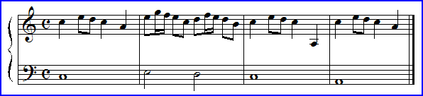

|  |
Purpose To explore several ways in which music may exhibit fractal characteristics.
Material The Fractal Composer software
Background Some basic music theory, examples of pitch and duration scaling.
Exercises by hand and with the Fractal Composer.
As a final example, pointing the way to future work, we give some examples of structural scaling in music, and a generalization, pulse trains.
Conclusion Music can exhibit fractality in several ways, from rigid self-similarity of the composition to a psychological superposition of patterns on different scales. Beware of books or webpages about fractal music: many of these are the worst kind of nonsense.